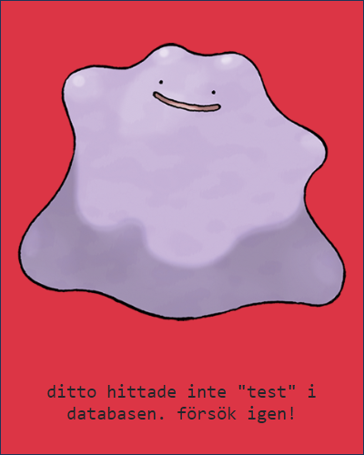

API:et
Länk till POKEAPI.coSÖK
Sökning kan göras med namn eller ID.
Vid ett sök som genererar ett felmeddelande, t.ex. 404 när användaren söker efter en karaktär som inte finns i JSON-strängen- visas ett felmeddelande enligt nedan:

Begränsningar
API:et tillhandahåller inte information om spel senare än Pokémon Black 2 & White 2 under spel-index ("game_indices").
Senare generationer än Generation 5 saknar viss information.
Webbsidan
Skapad med HTML, CSS, JavaScript och med hjälp av Bootstrap och Chart.js